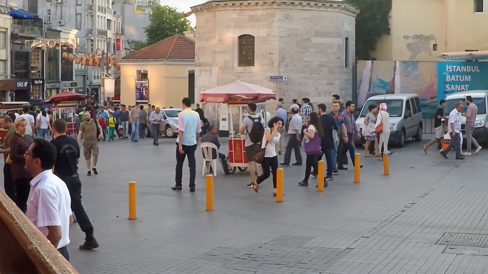
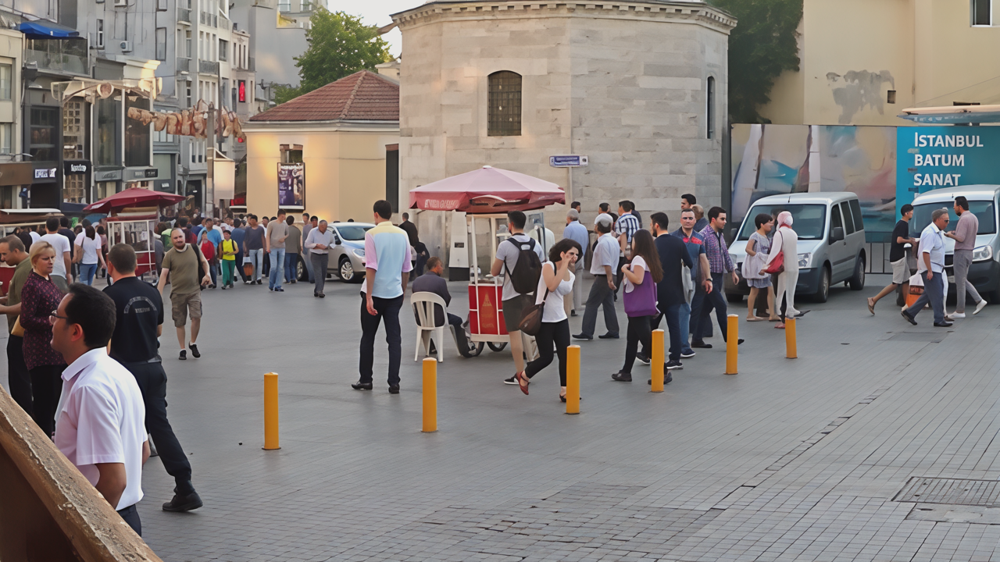
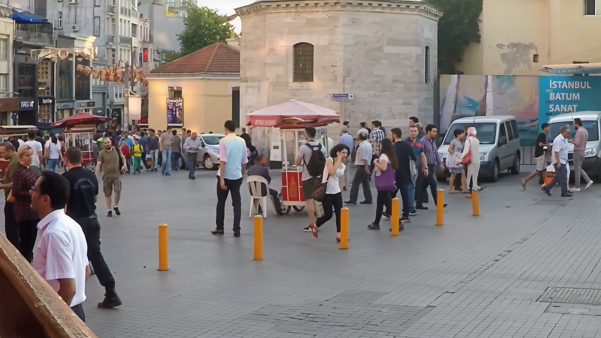
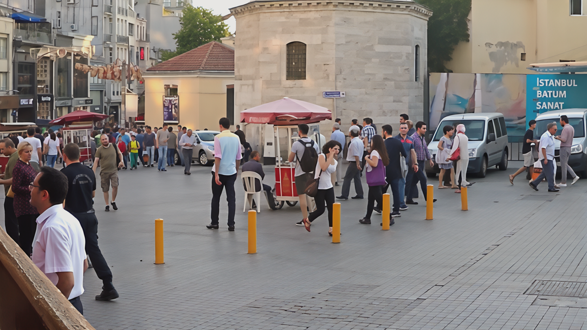

Comparison with simple super-resolution method
Tested with GT image from GoPro Deblurring Dataset
 



While standard super-resolution often introduces fake details (hallucinations) and color tone distortions, our framework faithfully enhances perceptual quality while preserving semantic consistency.